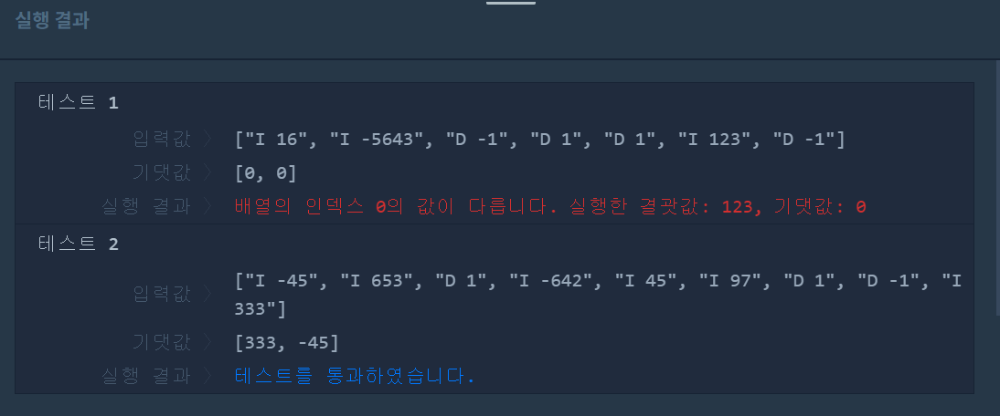
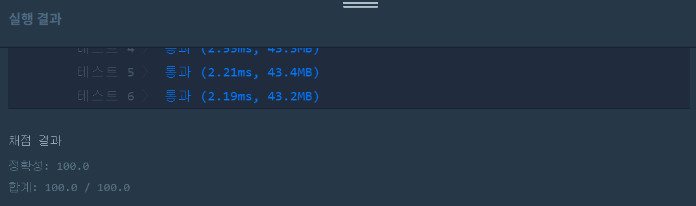

문제
https://programmers.co.kr/learn/courses/30/lessons/42628
( ᐛ )و 첫 번째 도전
1. 설계
- 하나는 오름차순, 하나는 내림차순으로 큐를 두 개 사용한다.
- operations를 split()메소드를 이용해 띄어쓰기를 기준으로 나눈다.
- I이면 두 개의 큐에 삽입한다.
- “D 1”은 maxPQ에서 삭제하고, “D -1”은 minPQ에서 삭제한다.
- [maxPQ의 루트, minPQ의 루트]를 리턴한다.
2. 구현
import java.util.PriorityQueue;
import java.util.Collections;
/**
*
* @author HEESOO
*
*/
class Solution {
public int[] solution(String[] operations) {
int[] answer = {};
PriorityQueue<Integer> minPQ=new PriorityQueue<Integer>();
PriorityQueue<Integer> maxPQ=new PriorityQueue<Integer>(Collections.reverseOrder());
String[] word;
for(String str:operations){
word=str.split(" ");
if(word[0].equals("I")){
minPQ.offer(Integer.parseInt(word[1]));
maxPQ.offer(Integer.parseInt(word[1]));
}
else if(word[0].equals("D")){
if(word[1].equals("1")&&!maxPQ.isEmpty()){
maxPQ.poll();
}
else if(word[1].equals("-1")&&!minPQ.isEmpty()){
minPQ.poll();
}
}
}
answer=new int[2];
if(!maxPQ.isEmpty()){
answer[0]=maxPQ.poll();
}
if(!minPQ.isEmpty()){
answer[1]=minPQ.poll();
}
return answer;
}
}
3. 결과
 실패. 테스트1에서 실패했다.
4. 문제점
똑같은 값을 두 개의 큐에 중복 저장하기 때문에, 삭제할 때 두 큐 모두 삭제해줘야 한다. 위 코드에서는 “D 1”의 경우 maxPQ에서, “D -1”은 minPQ에서만 삭제가 일어나기 때문에 문제가 발생한다.
( ᐛ )و 두 번째 도전
1. 설계
- maxPQ 또는 minPQ에서 삭제할 때, 나머지 큐에서도 동일한 값을 삭제해준다.
2. 구현
import java.util.PriorityQueue;
import java.util.Collections;
/**
*
* @author HEESOO
*
*/
class Solution {
public int[] solution(String[] operations) {
int[] answer = {};
PriorityQueue<Integer> minPQ=new PriorityQueue<Integer>();
PriorityQueue<Integer> maxPQ=new PriorityQueue<Integer>(Collections.reverseOrder());
String[] word;
int num;
for(String str:operations){
word=str.split(" ");
if(word[0].equals("I")){
minPQ.offer(Integer.parseInt(word[1]));
maxPQ.offer(Integer.parseInt(word[1]));
}
else if(word[0].equals("D")){
if(word[1].equals("1")&&!maxPQ.isEmpty()){
num=maxPQ.poll();
minPQ.remove(num);
}
else if(word[1].equals("-1")&&!minPQ.isEmpty()){
num=minPQ.poll();
maxPQ.remove(num);
}
}
}
answer=new int[2];
if(!maxPQ.isEmpty()){
answer[0]=maxPQ.poll();
}
if(!minPQ.isEmpty()){
answer[1]=minPQ.poll();
}
return answer;
}
}
- PriorityQueue
minPQ: 큐를 오름차순으로 정렬한다. 루트에 최솟값이 들어간다. - PriorityQueue
maxPQ: 큐를 내림차순으로 정렬한다. 루트에 최댓값이 들어간다. - String[] num: operations을 띄어쓰기를 기준으로 나눈다. num[0]에는 띄어쓰기 왼쪽 값 I 또는 D가 들어가고, num[1]은 띄어쓰기 오른쪽 값, 숫자 또는 1, -1이 저장된다.
- num: 삭제할 때 어떤 숫자가 삭제되는지 리턴받아 나머지 큐에서도 삭제해준다.
3. 결과
 성공٩(˘◊˘)۶
해결 완료!
나는 우선순위큐를 두 개 사용하여 문제를 풀었지만, 데크(Deque)를 사용해서도 문제를 풀 수 있을 것 같다. 데크는 앞뒤로 삽입 삭제가 가능하기 때문에 오름차순으로 정렬하면 문제를 쉽게 접근할 수 있지 않을까?
참고
- 프로그래머스 알고리즘: 이중 우선순위 큐 (java) https://jar100.tistory.com/21